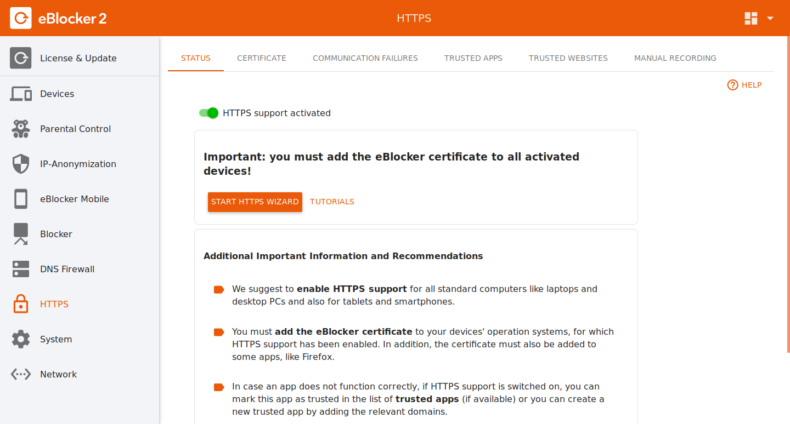

Deutsch | English
eBlocker Help > Knowledge Base > Use cases
After first connection the eBlocker shows its eBlocker icon only on HTTP pages. To be able to see the eBlocker symbol on HTTPS pages, you must activate the SSL function in the eBlocker and then store the eBlocker HTTPS certificate in the desired device.
Important: The HTTPS function is only available for the eBlocker Pro and eBlocker Family.
For devices where the eBlocker certificate cannot be stored, you should not activate the HTTPS function of eBlocker.
The eBlocker HTTPS function can be found in the eBlocker Settings > HTTPS menu.

If you activate the eBlocker HTTPS function for the first time, we recommend to renew the eBlocker certificate. Click on the CERTIFICATE tab in the HTTPS menu and then on the Renew now button at the bottom.
Follow the wizard and you have created a new eBlocker certificate, which is valid from the time of creation.
Now you can store the eBlocker certificate. We recommend to store the eBlocker certificate in the operating system first. Most browsers, or other programs, use the certificates from the certificate store of your operating system. Some few programs that use their own certificate store on all operating systems are the browser Firefox, Cliqz, Seamonkey, or the e-mail program Thunderbird.
Here you can find a list of our Certificate FAQ articles for the operating systems:
Storing the eBlocker certificate
Why is the eBlocker certificate so important?
Think of the eBlocker certificate as a key. As soon as you activate the SSL function of the eBlocker, the eBlocker opens the encrypted HTTPS / SSL data packages. The eBlocker removes data collectors and data collecting advertisements and encrypts the now unencrypted data package a second time. Your browser, or app, expects an encrypted data package. In order for your browser, or the app, to open the data packages encrypted by eBlocker again, you need the appropriate key (the eBlocker certificate).
Please also visit our FAQ's.